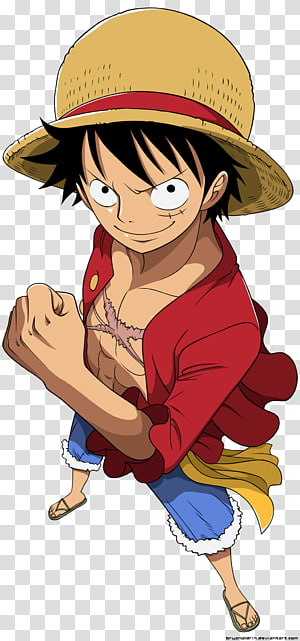
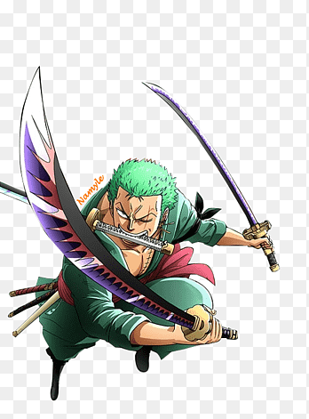
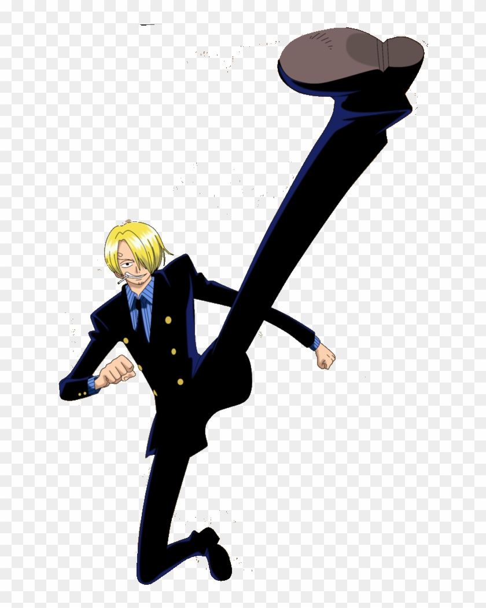
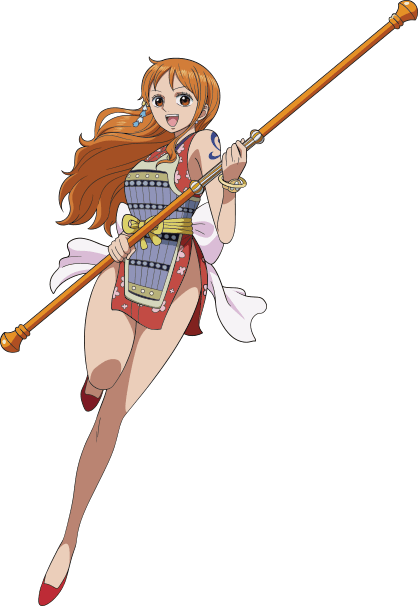

Scroll to discover their heritage

Captain of the Straw Hat Pirates
Father: Monkey D. Dragon Grandfather: Monkey D. Garp

Master swordsman of the Straw Hat Pirates
Trained in Shimotsuki Village

Chef of the Straw Hat Pirates
Prince of the Vinsmoke family

Navigator of the Straw Hat Pirates. Known as the "Cat Burglar."
Raised in Cocoyasi Village by her adoptive mother Belle-Mère alongside her sister Nojiko. Originally forced to work for the pirate Arlong before being freed by Luffy and joining the Straw Hats.
Expert navigator capable of predicting complex weather patterns. Uses the Clima-Tact weapon to manipulate weather in battle.